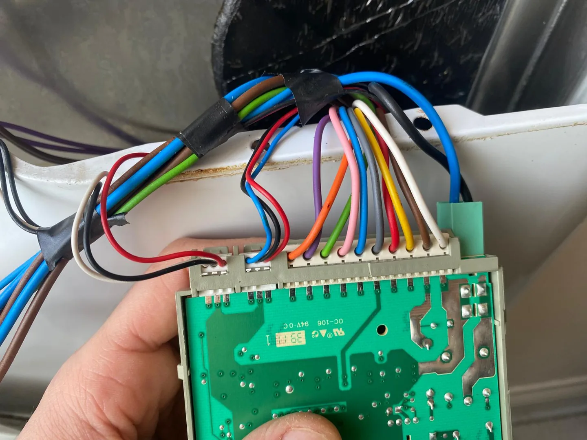

English communication
Explain the problem comfortably by phone or WhatsApp.
Washing, drainage, pump, heating and electronic control faults can be checked and explained clearly.

Tell us the appliance type, brand, model and symptoms. We can communicate in English and help you understand the next step before arranging service.
Explain the problem comfortably by phone or WhatsApp.
We assess the appliance and explain the service need clearly.
We explain the proposed work and cost before asking for your approval.
Pendik, Kurtköy, Tuzla and nearby areas.
USTALIĞIMIZA GÜVENİYORUZ
30 yıllık meslek deneyimimizi özenli arıza tespiti, açık fiyat bilgilendirmesi ve değişen parçada 1 yıl garantiyle birleştiriyoruz. Yaptığımız onarımın arkasında duruyor, işlem sonrasında da bize ulaşabilmenizi önemsiyoruz.
Değiştirdiğimiz parçalar 1 yıl garantilidir. Yapılacak işleme ilişkin kapsamı ve koşulları servis sırasında açıklıyoruz. Bu garanti, cihazın üretici garantisinden ayrıdır.
Markalardan bağımsız özel servisiz; yetkili servis olduğumuz iddiasında bulunmuyoruz.
Garanti ve servis hakkında bize ulaşın ↗Call or message us on WhatsApp in English. Share the appliance type, brand, model and problem.